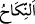
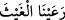
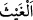

sana bir zorluk olmasın. Allah bağışlayandır, merhamet edendir.
51. Onlardan dilediğini geriye bırakır, dilediğini de yanına alırsın. Bıraktığın
hanımlarından arzu ettiğini tekrar yanına almanda, senin üzerine bir günah yoktur.
Böyle olması onların mutlu olmalarına, üzülmemelerine ve hepsinin, senin
verdiklerine razı olmalarına daha uygundur. Allah, kalplerinizde olanı bilir. Allah
hakkıyla bilendir, halîmdir.
52. Bundan sonra artık başka kadınlarla evlenmen, elinin altında bulunan
cariyeler hariç, güzellikleri hoşuna gitse bile, bunların yerine başka hanımlar alman
sana helâl değildir. Allah her şeyi gözetler.
“Ey îman edenler! Mü’min kadınları nikâhlayıp da,” yâni onlarla evlenip onlar
üzerine akid yapıp da…
Bahru’l-ulûm’da der ki: “ (nikah)” asıl anlamı cinsî ilişkide bulunmaktır. Sonra
evlilik akdine, müsebbebin (sonuç) ismiyle sebebi isimlendirme kabilinden mecazen
nikah denilmiştir. Çünkü nikah akdi, mübâh olan cinsî münâsebetin sebebidir. Allah
Teâlâ’nın: “Zina eden erkek, zina eden veya müşrik olan bir kadından başkasıyla
evlenemez.” (en-Nûr, 24/3) kavli bu mânâdadır. Yâni nikâh edemez, evlenemez
demektir. Yine bu mecâzî mânânın bir benzeri de “ (yağmuru otlattık)” sözünde
bitkiye “ (yağmur)” denilmesidir. Çünkü yağmur bitkinin sebebidir. Yine bu mecâzî
mânânın bir benzeri şaraba ‘günah’ denilmesidir. Çünkü şarap günah kazanmanın
sebebidir.
İmam Râğıb el-Müfredât’ta şöyle demiştir: “Nikah”ın asıl kullanımı, akid içindir.
Sonra mecaz olarak cimâ/cinsî münâsebet için kullanılmıştır. Asıl anlamının cimâ için
olması, sonra da mecaz olarak akid için kullanılması ise muhaldir. Çünkü cimâı/cinsî
münâsebeti ifâde eden bütün isimler kinayedir. Çünkü Araplar cimâın icrasını çirkin
gördükleri gibi ondan açıkça bahsetmeyi de çirkin sayarlar. Edebe ters bir şeyi
kasdetmeyen kimselerin iğrenç ve çirkin gördükleri bir şeyi, güzel gördükleri şey için
mecaz olarak kullanması ise muhaldir.”
el-Kâmûs’ta “Nikah, cimâ ve akid demektir.” denilmiştir.
Âyette “mü’min kadınlar” özel olarak yalnız mü’min hanımlar zikredilmiştir. Halbuki
âyetteki hükümde mü’min hanımlarla ehl-i kitabdan (yahudi hristiyan) olan hanımlar
eşittir. Bu, mü’min erkeğe yaraşanın, nutfesi için iyi bir seçimde bulunarak mü’min bir
hanımla evlenmek olduğuna tenbih içindir. Mü’min, kâfir kadınlar bir tarafa, fâsık
kadınlarla evlenmekten bile kaçınır.
Mâide sûresinde geçen “daha önce kendilerine kitap verilenlerden iffetli
kadınlar”la (el-Mâide, 5/5) evlenmenin haram kılınmayıp câiz olduğunu öğretmekten
ibârettir. Burada ise mü’min erkeklerin mü’min hanımlarla evlenmesinin evlâ olduğu
öğretilmektedir. Nitekim cins cinse meyleder denilmiştir.